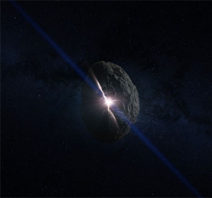

La NASA y la ESA prueban a desviar asteroides de su trayectoria de colisión con la Tierra

De todas las catástrofes naturales que pueden afectar a la vida en la Tierra, son los impactos de asteroides los que tienen el potencial de acabar con la vida tal y como la conocemos. Al igual que los dinosaurios encontraron su destino con la ayuda de un gran asteroide hace unos 66 millones de años, la humanidad estaría en serios problemas si se produjera un evento similar. Por suerte, los científicos están elaborando una imagen de los asteroides cercanos a la Tierra que podrían causarnos problemas algún día.
Encontrar los asteroides es solo la primera parte del rompecabezas, pero los científicos también tienen algunas ideas sobre cómo evitar posibles colisiones futuras. Dos nuevas misiones lanzadas por la NASA y la Agencia Espacial Europea (ESA) van a probar un método para desviar de su curso a los asteroides que se acercan a la Tierra. La misión DART (por sus siglas en inglés: Double Asteroid Redirection Test) de la NASA despegará después del 24 de noviembre de este año, y la nave llegará al sistema de asteroides Didymos, a 11 millones de kilómetros de la Tierra, aproximadamente un año después. Allí chocará con la luna de Didymos, una roca más pequeña que orbita alrededor del asteroide.
¿Es seguro desviar un asteroide cercano a la Tierra como parte de una prueba? Según el profesor Alan Fitzsimmons, del Centro de Investigación de Astrofísica de la Universidad Queen's de Belfast, sí. "La técnica inteligente que ha elegido el equipo DART de la NASA es tomar un asteroide que pueda pasar cerca de la Tierra y luego apuntar a su luna, porque la luna se mueve alrededor del asteroide más grande cuando este orbita alrededor del sol", dice a Vaetics. "Así que intentaremos mover la luna del asteroide y eso sólo cambiará la órbita de la luna alrededor del asteroide y apenas afectará al gran asteroide en sí. Así que es completamente seguro". La misión de la ESA, Hera, monitorizará entonces cómo afecta DART al movimiento del lunar. Esto informará a los investigadores sobre la posibilidad de desviar rocas más grandes de su curso, en caso de que sea necesario. El profesor Fitzsimmons, que dará una charla sobre la misión con motivo del Día Mundial del Asteroide (miércoles 30 de junio), afirma que es como una partida de "billar cósmico". "Cuando se golpea el asteroide con nuestra nave espacial, se mueve ligeramente en la dirección opuesta. Sabemos que esto debería funcionar, pero no sabemos exactamente cuánto se moverá el asteroide. Así que este es el propósito de las misiones espaciales, medir cuánto podemos mover un asteroide", dice. Según el profesor Fitzsimmons, será la primera práctica de defensa planetaria realizada por la humanidad.